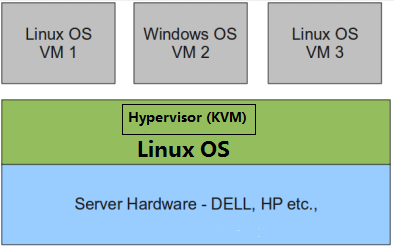
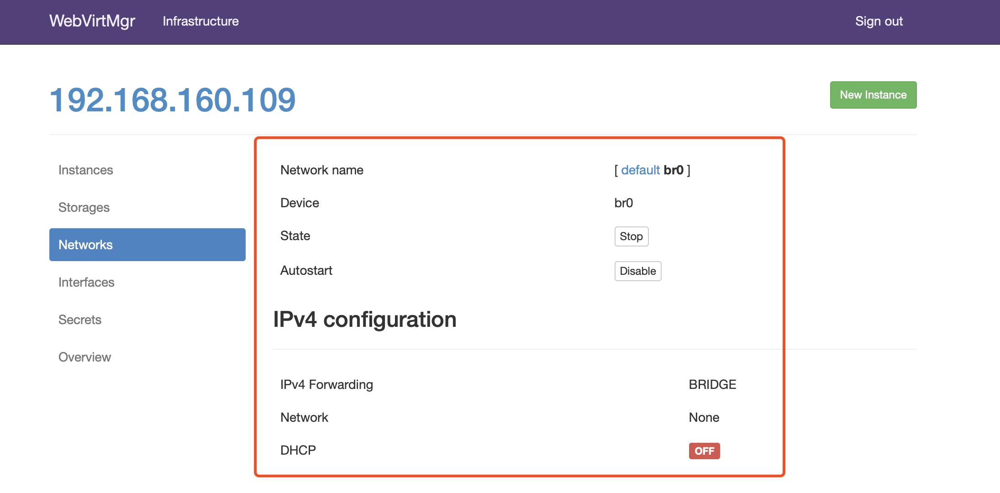
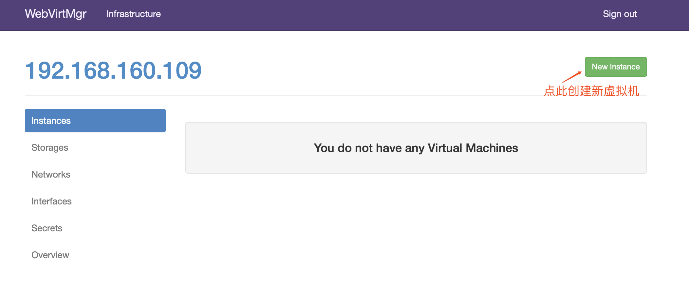
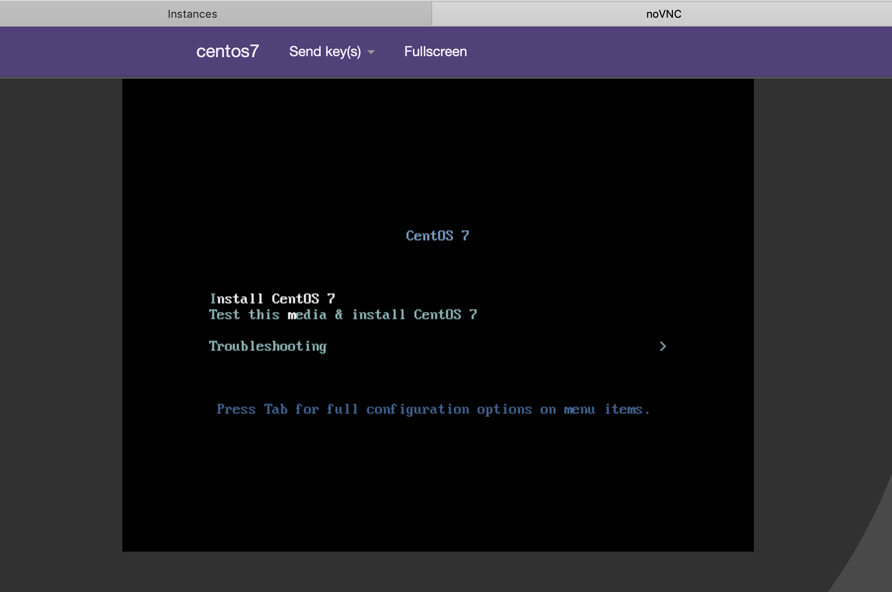

1. 虚拟化介绍
虚拟化是云计算的基础。简单的说，虚拟化使得在一台物理的服务器上可以跑多台虚拟机，虚拟机共享物理机的 CPU、内存、IO 硬件资源，但逻辑上虚拟机之间是相互隔离的。
物理机我们一般称为宿主机（Host），宿主机上面的虚拟机称为客户机（Guest）。
那么 Host 是如何将自己的硬件资源虚拟化，并提供给 Guest 使用的呢？
这个主要是通过一个叫做 Hypervisor 的程序实现的。
根据 Hypervisor 的实现方式和所处的位置，虚拟化又分为两种：
全虚拟化：
Hypervisor 直接安装在物理机上，多个虚拟机在 Hypervisor 上运行。Hypervisor 实现方式一般是一个特殊定制的 Linux 系统。Xen 和 VMWare 的 ESXi 都属于这个类型

半虚拟化：
物理机上首先安装常规的操作系统，比如 Redhat、Ubuntu 和 Windows。Hypervisor 作为 OS 上的一个程序模块运行，并对管理虚拟机进行管理。KVM、VirtualBox 和 VMWare Workstation 都属于这个类型

理论上讲：
全虚拟化一般对硬件虚拟化功能进行了特别优化，性能上比半虚拟化要高；
半虚拟化因为基于普通的操作系统，会比较灵活，比如支持虚拟机嵌套。嵌套意味着可以在KVM虚拟机中再运行KVM。
2. kvm介绍
kVM 全称是 Kernel-Based Virtual Machine。也就是说 KVM 是基于 Linux 内核实现的。
KVM有一个内核模块叫 kvm.ko，只用于管理虚拟 CPU 和内存。
那 IO 的虚拟化，比如存储和网络设备则是由 Linux 内核与Qemu来实现。
作为一个 Hypervisor，KVM 本身只关注虚拟机调度和内存管理这两个方面。IO 外设的任务交给 Linux 内核和 Qemu。
大家在网上看 KVM 相关文章的时候肯定经常会看到 Libvirt 这个东西。
Libvirt 就是 KVM 的管理工具。
其实，Libvirt 除了能管理 KVM 这种 Hypervisor，还能管理 Xen，VirtualBox 等。
Libvirt 包含 3 个东西：后台 daemon 程序 libvirtd、API 库和命令行工具 virsh
- libvirtd是服务程序，接收和处理 API 请求；
- API 库使得其他人可以开发基于 Libvirt 的高级工具，比如 virt-manager，这是个图形化的 KVM 管理工具；
- virsh 是我们经常要用的 KVM 命令行工具
3. kvm部署
环境说明：
| 系统类型 |
IP |
| centos7.6 |
172.16.137.12 |
3.1 kvm安装
部署前请确保你的CPU虚拟化功能已开启。分为两种情况：
- 虚拟机要关机设置CPU虚拟化
- 物理机要在BIOS里开启CPU虚拟化
1
2
3
4
5
6
7
8
9
10
11
12
13
14
15
16
17
18
19
20
21
22
23
24
25
26
27
28
29
30
31
32
33
34
35
36
37
38
39
40
41
42
43
44
45
46
47
48
49
50
51
52
53
54
55
56
57
58
59
60
61
62
63
64
65
66
67
68
69
70
71
72
73
74
75
76
77
78
79
80
81
82
83
84
85
86
87
88
89
90
91
92
93
94
95
96
97
98
99
100
101
102
103
104
105
106
107
108
109
110
111
112
113
114
115
|
关闭防火墙与SELINUX
[root@kvm ~]# systemctl stop firewalld
[root@kvm ~]# systemctl disable firewalld
Removed symlink /etc/systemd/system/multi-user.target.wants/firewalld.service.
Removed symlink /etc/systemd/system/dbus-org.fedoraproject.FirewallD1.service.
[root@kvm ~]# setenforce 0
[root@kvm ~]# sed -ri 's/^(SELINUX=).*/\1disabled/g' /etc/selinux/config
[root@localhost ~]# reboot
配置网络源
[root@kvm yum.repos.d]# curl -o /etc/yum.repos.d/CentOS7-Base-163.repo http://mirrors.163.com/.help/CentOS7-Base-163.repo
[root@kvm ~]# sed -i 's/\$releasever/7/g' /etc/yum.repos.d/CentOS7-Base-163.repo
[root@kvm ~]# sed -i 's/^enabled=.*/enabled=1/g' /etc/yum.repos.d/CentOS7-Base-163.repo
[root@kvm ~]# yum -y install epel-release vim wget net-tools unzip zip gcc gcc-c++
安装过程略.....
验证CPU是否支持KVM；如果结果中有vmx（Intel）或svm(AMD)字样，就说明CPU的支持的
[root@kvm ~]# egrep -o 'vmx|svm' /proc/cpuinfo
vmx
vmx
vmx
vmx
kvm安装
[root@kvm ~]# yum -y install qemu-kvm qemu-kvm-tools qemu-img virt-manager libvirt libvirt-python libvirt-client virt-install virt-viewer bridge-utils libguestfs-tools
安装过程略......
因为虚拟机中网络，我们一般都是和公司的其他服务器是同一个网段，所以我们需要把 \
KVM服务器的网卡配置成桥接模式。这样的话KVM的虚拟机就可以通过该桥接网卡和公司内部 \
其他服务器处于同一网段
此处我的网卡是ens33，所以用br0来桥接ens33网卡
[root@kvm ~]# cd /etc/sysconfig/network-scripts/
[root@kvm network-scripts]# ls
ifcfg-ens33 ifdown-isdn ifup ifup-plip ifup-tunnel
ifcfg-lo ifdown-post ifup-aliases ifup-plusb
.....此处内容省略
[root@kvm network-scripts]# cp ifcfg-ens33 ifcfg-br0
[root@kvm network-scripts]# cat ifcfg-br0
TYPE=Bridge
DEVICE=br0
NM_CONTROLLED=no
BOOTPROTO=static
NAME=br0
ONBOOT=yes
IPADDR=192.168.160.109
NETMASK=255.255.255.0
GATEWAY=192.168.160.1
DNS1=114.114.114.114
DNS2=8.8.8.8
[root@kvm network-scripts]# cat ifcfg-ens33
TYPE=Ethernet
BOOTPROTO=static
NAME=ens33
DEVICE=ens33
ONBOOT=yes
BRIDGE=br0
NM_CONTROLLED=no
重启网络
[root@kvm ~]# systemctl restart network
[root@kvm ~]# ip a
1: lo: <LOOPBACK,UP,LOWER_UP> mtu 65536 qdisc noqueue state UNKNOWN qlen 1
link/loopback 00:00:00:00:00:00 brd 00:00:00:00:00:00
inet 127.0.0.1/8 scope host lo
valid_lft forever preferred_lft forever
inet6 ::1/128 scope host
valid_lft forever preferred_lft forever
2: ens33: <BROADCAST,MULTICAST,UP,LOWER_UP> mtu 1500 qdisc pfifo_fast master br0 state UP qlen 1000
link/ether 00:0c:29:4c:50:b4 brd ff:ff:ff:ff:ff:ff
3: virbr0: <NO-CARRIER,BROADCAST,MULTICAST,UP> mtu 1500 qdisc noqueue state DOWN qlen 1000
link/ether 52:54:00:60:a8:ea brd ff:ff:ff:ff:ff:ff
inet 192.168.122.1/24 brd 192.168.122.255 scope global virbr0
valid_lft forever preferred_lft forever
4: virbr0-nic: <BROADCAST,MULTICAST> mtu 1500 qdisc pfifo_fast master virbr0 state DOWN qlen 1000
link/ether 52:54:00:60:a8:ea brd ff:ff:ff:ff:ff:ff
5: br0: <BROADCAST,MULTICAST,UP,LOWER_UP> mtu 1500 qdisc noqueue state UP qlen 1000
link/ether 72:63:57:0a:ca:76 brd ff:ff:ff:ff:ff:ff
inet 192.168.160.109/24 brd 192.168.160.255 scope global br0
valid_lft forever preferred_lft forever
inet6 fe80::7063:57ff:fe0a:ca76/64 scope link
valid_lft forever preferred_lft forever
启动服务
[root@kvm ~]# systemctl start libvirtd
[root@kvm ~]# systemctl enable libvirtd
验证安装结果
[root@kvm ~]# lsmod|grep kvm
kvm_intel 170086 0
kvm 566340 1 kvm_intel
irqbypass 13503 1 kvm
测试并验证安装结果
[root@kvm ~]# virsh -c qemu:///system list
Id Name State
----------------------------------------------------
[root@kvm ~]# virsh --version
3.9.0
[root@kvm ~]# virt-install --version
1.4.3
[root@kvm ~]# ln -s /usr/libexec/qemu-kvm /usr/bin/qemu-kvm
[root@kvm ~]# ll /usr/bin/qemu-kvm
lrwxrwxrwx 1 root root 21 Oct 18 10:57 /usr/bin/qemu-kvm -> /usr/libexec/qemu-kvm
[root@kvm ~]# lsmod |grep kvm
kvm_intel 170086 0
kvm 566340 1 kvm_intel
irqbypass 13503 1 kvm
查看网桥信息
[root@kvm ~]# brctl show
bridge name bridge id STP enabled interfaces
br0 8000.000c294c50b4 no ens33
virbr0 8000.52540060a8ea yes virbr0-nic
|
3.2 kvm web管理界面安装
kvm 的 web 管理界面是由 webvirtmgr 程序提供的。
1
2
3
4
5
6
7
8
9
10
11
12
13
14
15
16
17
18
19
20
21
22
23
24
25
26
27
28
29
30
31
32
33
34
35
36
37
38
39
40
41
42
43
44
45
46
47
48
49
50
51
52
53
54
55
56
57
58
59
60
61
62
63
64
65
66
67
68
69
70
71
72
73
74
75
76
77
78
79
80
81
82
83
84
85
86
87
88
89
90
91
92
93
94
95
96
97
98
99
100
101
102
103
104
105
106
107
108
109
110
111
112
113
114
115
116
117
118
119
120
121
122
123
124
125
126
127
128
129
130
131
132
133
134
135
136
137
138
139
140
141
142
143
144
145
146
147
148
149
150
151
152
153
154
155
156
157
158
159
160
161
162
163
164
165
166
167
168
169
170
171
172
173
174
175
176
177
178
179
180
181
182
183
184
185
186
187
188
189
190
191
192
193
194
195
196
197
198
199
200
201
202
203
204
205
206
207
208
209
210
211
212
213
214
215
216
217
218
219
220
221
222
223
224
225
226
227
228
229
230
231
232
233
234
235
236
237
238
239
240
241
242
243
244
245
246
247
248
249
250
251
252
253
254
255
256
257
258
259
260
261
262
263
264
265
266
267
268
269
270
271
272
273
274
275
276
277
278
279
280
281
282
283
284
285
286
287
288
289
290
291
292
293
294
295
296
297
298
299
300
301
302
303
304
305
306
307
308
309
310
311
312
313
314
315
316
317
318
319
320
321
322
323
324
325
326
327
328
329
330
331
332
|
安装依赖包
[root@kvm ~]# yum -y install git python-pip libvirt-python libxml2-python python-websockify supervisor nginx python-devel
升级pip
[root@kvm ~]# pip install --upgrade pip
从github上下载webvirtmgr代码
[root@kvm ~]# cd /usr/local/src/
[root@kvm src]# git clone git://github.com/retspen/webvirtmgr.git
Cloning into 'webvirtmgr'...
remote: Enumerating objects: 5730, done.
remote: Total 5730 (delta 0), reused 0 (delta 0), pack-reused 5730
Receiving objects: 100% (5730/5730), 3.01 MiB | 39.00 KiB/s, done.
Resolving deltas: 100% (3688/3688), done.
安装webvirtmgr
[root@kvm src]# cd webvirtmgr/
[root@kvm webvirtmgr]# pip install -r requirements.txt
Collecting django==1.5.5 (from -r requirements.txt (line 1))
Downloading https://files.pythonhosted.org/packages/38/49/93511c5d3367b6b21fc2995a0e53399721afc15e4cd6eb57be879ae13ad4/Django-1.5.5.tar.gz (8.1MB)
57% |██████████████████▌ | 4.7MB 38kB/s eta 0:01:28
.....此处省略安装步骤
检查sqlite3是否安装
[root@kvm webvirtmgr]# python
Python 2.7.5 (default, May 3 2017, 07:55:04)
[GCC 4.8.5 20150623 (Red Hat 4.8.5-14)] on linux2
Type "help", "copyright", "credits" or "license" for more information.
>>> import sqlite3
>>> exit()
初始化帐号信息
[root@kvm webvirtmgr]# python manage.py syncdb
WARNING:root:No local_settings file found.
Creating tables ...
Creating table auth_permission
Creating table auth_group_permissions
Creating table auth_group
Creating table auth_user_groups
Creating table auth_user_user_permissions
Creating table auth_user
Creating table django_content_type
Creating table django_session
Creating table django_site
Creating table servers_compute
Creating table instance_instance
Creating table create_flavor
You just installed Django's auth system, which means you don't have any superusers defined.
Would you like to create one now? (yes/no): yes //问你是否创建超级管理员帐号
Username (leave blank to use 'root'): //指定超级管理员帐号用户名，默认留空为root
Email address: sean1002@126.com //设置超级管理员邮箱
Password: //设置超级管理员密码
Password (again): //再次输入超级管理员密码
Superuser created successfully.
Installing custom SQL ...
Installing indexes ...
Installed 6 object(s) from 1 fixture(s)
拷贝web网页至指定目录
[root@kvm webvirtmgr]# mkdir /var/www
[root@kvm webvirtmgr]# cp -r /usr/local/src/webvirtmgr /var/www/
[root@kvm webvirtmgr]# chown -R nginx.nginx /var/www/webvirtmgr/
生成密钥
[root@kvm ~]# ssh-keygen -t rsa
Generating public/private rsa key pair.
Enter file in which to save the key (/root/.ssh/id_rsa):
Created directory '/root/.ssh'.
Enter passphrase (empty for no passphrase):
Enter same passphrase again:
Your identification has been saved in /root/.ssh/id_rsa.
Your public key has been saved in /root/.ssh/id_rsa.pub.
The key fingerprint is:
SHA256:CQoZtso2M5Uo39lKvjZboncqakQ69iJt5wnjiJKZNhw root@kvm
The key's randomart image is:
+---[RSA 2048]----+
| o |
| ..+. |
|..+o . |
|o+.o + . . |
|+*. = . S |
|+E+o . |
|+*= + . |
|BO+===. |
|Oo=**= |
+----[SHA256]-----+
由于这里webvirtmgr和kvm服务部署在同一台机器，所以这里本地信任。如果kvm部署在其他机器，那么这个是它的ip
[root@kvm ~]# ssh-copy-id 192.168.160.109
/usr/bin/ssh-copy-id: INFO: Source of key(s) to be installed: "/root/.ssh/id_rsa.pub"
The authenticity of host '192.168.160.109 (192.168.160.109)' can't be established.
ECDSA key fingerprint is SHA256:UszC1ZeHM7xw/uefVkJoXW6XgRw+Jl51tAXLjFERclE.
ECDSA key fingerprint is MD5:b3:f1:02:b8:01:8e:53:a7:87:09:c0:75:24:4c:ad:88.
Are you sure you want to continue connecting (yes/no)? yes
/usr/bin/ssh-copy-id: INFO: attempting to log in with the new key(s), to filter out any that are already installed
/usr/bin/ssh-copy-id: INFO: 1 key(s) remain to be installed -- if you are prompted now it is to install the new keys
root@192.168.160.109's password:
Number of key(s) added: 1
Now try logging into the machine, with: "ssh '192.168.160.109'"
and check to make sure that only the key(s) you wanted were added.
配置端口转发
[root@kvm ~]# ssh 192.168.160.109 -L localhost:8000:localhost:8000 -L localhost:6080:localhost:60
Last login: Thu Oct 18 08:26:40 2018 from 192.168.160.36
[root@kvm ~]# ss -antl
State Recv-Q Send-Q Local Address:Port Peer Address:Port
LISTEN 0 128 *:111 *:*
LISTEN 0 5 192.168.122.1:53 *:*
LISTEN 0 128 *:22 *:*
LISTEN 0 100 127.0.0.1:25 *:*
LISTEN 0 128 127.0.0.1:6080 *:*
LISTEN 0 128 127.0.0.1:8000 *:*
LISTEN 0 128 :::111 :::*
LISTEN 0 128 :::22 :::*
LISTEN 0 100 ::1:25 :::*
LISTEN 0 128 ::1:6080 :::*
LISTEN 0 128 ::1:8000 :::*
配置nginx
[root@kvm ~]# vim /etc/nginx/nginx.conf
user nginx;
worker_processes auto;
error_log /var/log/nginx/error.log;
pid /run/nginx.pid;
include /usr/share/nginx/modules/*.conf;
events {
worker_connections 1024;
}
http {
log_format main '$remote_addr - $remote_user [$time_local] "$request" '
'$status $body_bytes_sent "$http_referer" '
'"$http_user_agent" "$http_x_forwarded_for"';
access_log /var/log/nginx/access.log main;
sendfile on;
tcp_nopush on;
tcp_nodelay on;
keepalive_timeout 65;
types_hash_max_size 2048;
include /etc/nginx/mime.types;
default_type application/octet-stream;
include /etc/nginx/conf.d/*.conf;
server {
listen 80;
server_name localhost;
include /etc/nginx/default.d/*.conf;
location / {
root html;
index index.html index.htm;
}
error_page 404 /404.html;
location = /40x.html {
}
error_page 500 502 503 504 /50x.html;
location = /50x.html {
}
}
}
[root@kvm ~]# vim /etc/nginx/conf.d/webvirtmgr.conf
server {
listen 80 default_server;
server_name $hostname;
#access_log /var/log/nginx/webvirtmgr_access_log;
location /static/ {
root /var/www/webvirtmgr/webvirtmgr;
expires max;
}
location / {
proxy_pass http://127.0.0.1:8000;
proxy_set_header X-Real-IP $remote_addr;
proxy_set_header X-Forwarded-for $proxy_add_x_forwarded_for;
proxy_set_header Host $host:$server_port;
proxy_set_header X-Forwarded-Proto $remote_addr;
proxy_connect_timeout 600;
proxy_read_timeout 600;
proxy_send_timeout 600;
client_max_body_size 1024M;
}
}
确保bind绑定的是本机的8000端口
[root@kvm ~]# vim /var/www/webvirtmgr/conf/gunicorn.conf.py
.....此处省略N行
bind = '0.0.0.0:8000' //确保此处绑定的是本机的8000端口，这个在nginx配置中定义了，被代理的端口
backlog = 2048
.....此处省略N行
重启nginx
[root@kvm ~]# systemctl restart nginx
[root@kvm ~]# ss -antl
State Recv-Q Send-Q Local Address:Port Peer Address:Port
LISTEN 0 128 *:111 *:*
LISTEN 0 128 *:80 *:*
LISTEN 0 5 192.168.122.1:53 *:*
LISTEN 0 128 *:22 *:*
LISTEN 0 100 127.0.0.1:25 *:*
LISTEN 0 128 127.0.0.1:6080 *:*
LISTEN 0 128 127.0.0.1:8000 *:*
LISTEN 0 128 :::111 :::*
LISTEN 0 128 :::22 :::*
LISTEN 0 100 ::1:25 :::*
LISTEN 0 128 ::1:6080 :::*
LISTEN 0 128 ::1:8000 :::*
设置supervisor
[root@kvm ~]# vim /etc/supervisord.conf
.....此处省略上面的内容，在文件最后加上以下内容
[program:webvirtmgr]
command=/usr/bin/python2 /var/www/webvirtmgr/manage.py run_gunicorn -c /var/www/webvirtmgr/conf/gunicorn.conf.py
directory=/var/www/webvirtmgr
autostart=true
autorestart=true
logfile=/var/log/supervisor/webvirtmgr.log
log_stderr=true
user=nginx
[program:webvirtmgr-console]
command=/usr/bin/python2 /var/www/webvirtmgr/console/webvirtmgr-console
directory=/var/www/webvirtmgr
autostart=true
autorestart=true
stdout_logfile=/var/log/supervisor/webvirtmgr-console.log
redirect_stderr=true
user=nginx
启动supervisor并设置开机自启
[root@kvm ~]# systemctl start supervisord
[root@kvm ~]# systemctl enable supervisord
Created symlink from /etc/systemd/system/multi-user.target.wants/supervisord.service to /usr/lib/systemd/system/supervisord.service.
[root@kvm ~]# systemctl status supervisord
● supervisord.service - Process Monitoring and Control Daemon
Loaded: loaded (/usr/lib/systemd/system/supervisord.service; enabled; vendor preset: disabled)
Active: active (running) since Thu 2018-10-18 11:59:33 CST; 25s ago
Main PID: 17918 (supervisord)
CGroup: /system.slice/supervisord.service
└─17918 /usr/bin/python /usr/bin/supervisord -c /etc/supervisord.conf
Oct 18 11:59:33 kvm systemd[1]: Starting Process Monitoring and Control Daemon...
Oct 18 11:59:33 kvm systemd[1]: Started Process Monitoring and Control Daemon.
[root@kvm webvirtmgr]# ss -antl
State Recv-Q Send-Q Local Address:Port Peer Address:Port
LISTEN 0 128 *:111 *:*
LISTEN 0 128 *:80 *:*
LISTEN 0 5 192.168.122.1:53 *:*
LISTEN 0 128 *:22 *:*
LISTEN 0 100 127.0.0.1:25 *:*
LISTEN 0 128 *:8000 *:*
LISTEN 0 100 *:6080 *:*
LISTEN 0 128 :::111 :::*
LISTEN 0 128 :::22 :::*
LISTEN 0 100 ::1:25 :::*
配置nginx用户
[root@kvm home]# su - nginx -s /bin/bash
-bash-4.2$ ssh-keygen -t rsa
Generating public/private rsa key pair.
Enter file in which to save the key (/var/lib/nginx/.ssh/id_rsa):
Created directory '/var/lib/nginx/.ssh'.
Enter passphrase (empty for no passphrase):
Enter same passphrase again:
Your identification has been saved in /var/lib/nginx/.ssh/id_rsa.
Your public key has been saved in /var/lib/nginx/.ssh/id_rsa.pub.
The key fingerprint is:
SHA256:rdbmW/YIXxAJBzPsd9q9eKHPjWtSZ5EQC5li3tkczYI nginx@localhost.localdomain
The key's randomart image is:
+---[RSA 2048]----+
| .=o=.+ |
| o.E.=.o |
| o.o *.+ .|
| o.o.+.o |
| S ...+ ..|
| o ..o.+|
| o + o.+oo|
| . o =.*o+.|
| o.oo*+.|
+----[SHA256]-----+
-bash-4.2$ touch ~/.ssh/config && echo -e "StrictHostKeyChecking=no\nUserKnownHostsFile=/dev/null" >> ~/.ssh/config
-bash-4.2$ chmod 0600 ~/.ssh/config
-bash-4.2$ ssh-copy-id root@192.168.160.109
/bin/ssh-copy-id: INFO: Source of key(s) to be installed: "/var/lib/nginx/.ssh/id_rsa.pub"
/bin/ssh-copy-id: INFO: attempting to log in with the new key(s), to filter out any that are already installed
/bin/ssh-copy-id: INFO: 1 key(s) remain to be installed -- if you are prompted now it is to install the new keys
Warning: Permanently added '192.168.160.109' (ECDSA) to the list of known hosts.
root@192.168.160.109's password:
Number of key(s) added: 1
Now try logging into the machine, with: "ssh 'root@192.168.160.109'"
and check to make sure that only the key(s) you wanted were added.
-bash-4.2$ exit
logout
[root@kvm ~]# vim /etc/polkit-1/localauthority/50-local.d/50-libvirt-remote-access.pkla
[Remote libvirt SSH access]
Identity=unix-user:root
Action=org.libvirt.unix.manage
ResultAny=yes
ResultInactive=yes
ResultActive=yes
[root@kvm ~]# chown -R root.root /etc/polkit-1/localauthority/50-local.d/50-libvirt-remote-access.pkla
[root@kvm ~]# systemctl restart nginx
[root@kvm ~]# systemctl restart libvirtd
|
3.3 kvm web界面管理
通过ip地址在浏览器上访问kvm，例如我这里就是：http://192.168.160.109/login

3.3.1 kvm连接管理
创建SSH连接：


3.3.2 kvm存储管理
创建存储：


进入存储：


通过远程连接软件上传ISO镜像文件至存储目录/var/lib/libvirt/images/
1
2
3
4
5
6
7
8
9
10
|
[root@kvm ~]# cd /var/lib/libvirt/images/
[root@kvm images]# ls
[root@kvm images]#
Upload SCP
CentOS-7-x86_64-DVD-1804.iso (4263.00 MB, 8:45 min = 8.12 MB/sec)
[root@kvm images]# ls
CentOS-7-x86_64-DVD-1804.iso |
在 web 界面查看ISO镜像是否存在

创建系统安装镜像


添加成功如下图所示

3.3.3 kvm网络管理
添加桥接网络


3.3.4 实例管理
实例(虚拟机)创建



虚拟机插入光盘

设置在 web 上访问虚拟机的密码

启动虚拟机

虚拟机安装

虚拟机安装步骤就是安装系统的步骤，此处就不再赘述
4.故障案例
4.1 案例1
web界面配置完成后可能会出现以下错误界面
 解决方法是安装novnc并通过novnc_server启动一个vnc
解决方法是安装novnc并通过novnc_server启动一个vnc
1
2
3
4
5
6
7
8
9
10
11
12
13
14
15
16
|
[root@localhost ~]# ll /etc/rc.local
lrwxrwxrwx. 1 root root 13 Aug 6 2018 /etc/rc.local -> rc.d/rc.local
[root@localhost ~]# ll /etc/rc.d/rc.local
-rw-r--r-- 1 root root 513 Mar 11 22:35 /etc/rc.d/rc.local
[root@localhost ~]# chmod +x /etc/rc.d/rc.local
[root@localhost ~]# ll /etc/rc.d/rc.local
-rwxr-xr-x 1 root root 513 Mar 11 22:35 /etc/rc.d/rc.local
[root@localhost ~]# vim /etc/rc.d/rc.local
......此处省略N行
# that this script will be executed during boot.
touch /var/lock/subsys/local
nohup novnc_server 172.16.12.128:5920 &
[root@localhost ~]# . /etc/rc.d/rc.local |
做完以上操作后再次访问即可正常访问

4.2 案例2
第一次通过web访问kvm时可能会一直访问不了，一直转圈，而命令行界面一直报错(too many open files)
此时需要对nginx进行配置
1
2
3
4
5
6
7
8
9
10
11
12
|
[root@localhost ~]# vim /etc/nginx/nginx.conf
....此处省略N行
user nginx;
worker_processes auto;
error_log /var/log/nginx/error.log;
pid /run/nginx.pid;
worker_rlimit_nofile 655350; //添加此行配置
# Load dynamic modules. See /usr/share/nginx/README.dynamic.
....此处省略N行
[root@localhost ~]# systemctl restart nginx |
然后对系统参数进行设置
1
2
3
4
5
|
[root@localhost ~]# vim /etc/security/limits.conf
....此处省略N行
# End of file
* soft nofile 655350
* hard nofile 655350 |
到此问题即可解决